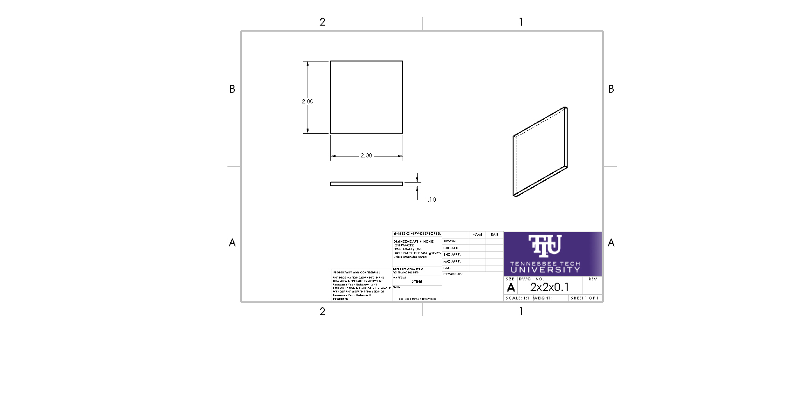
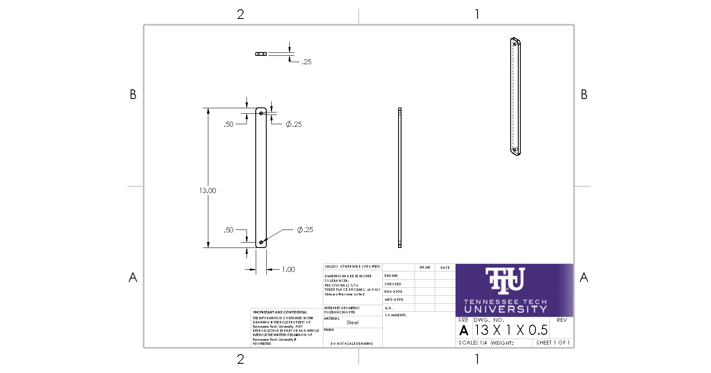
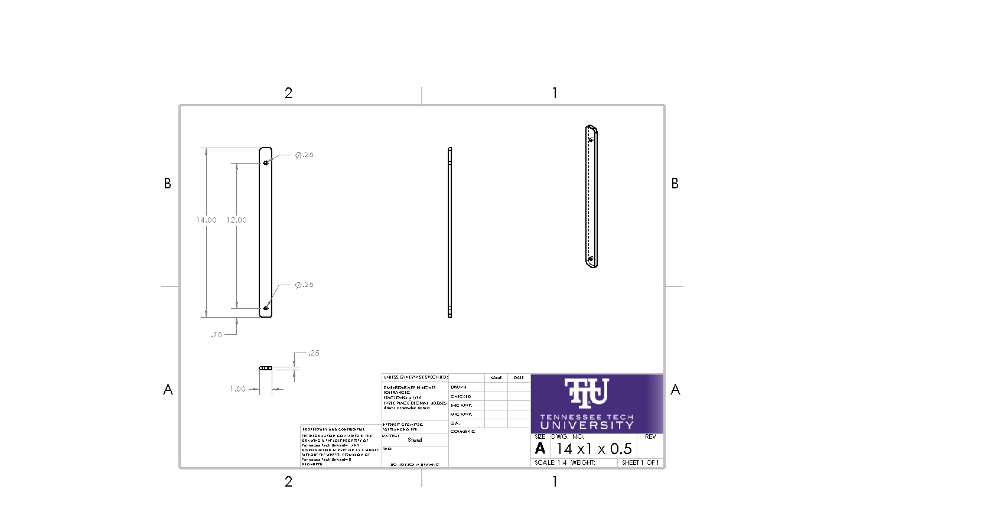
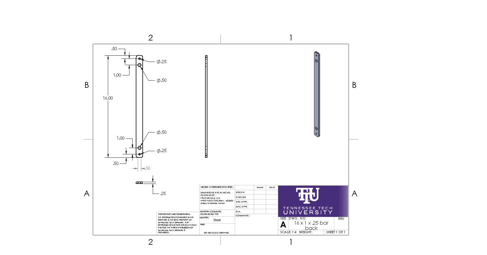
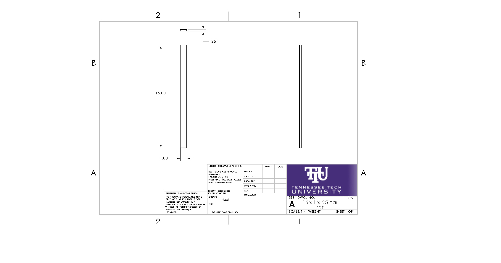
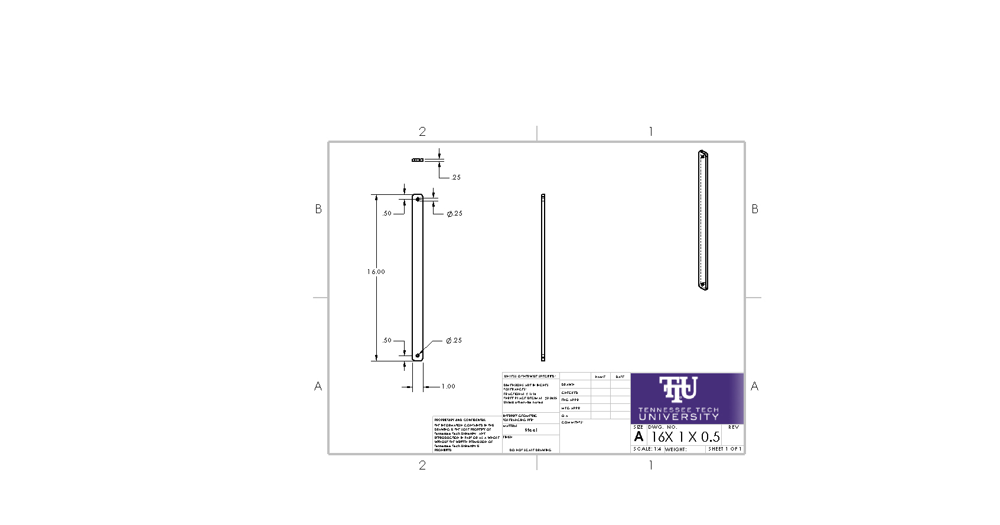
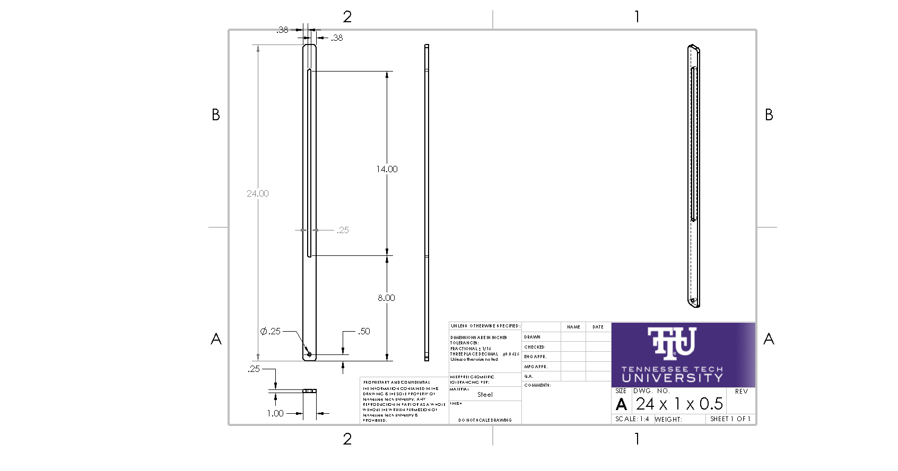
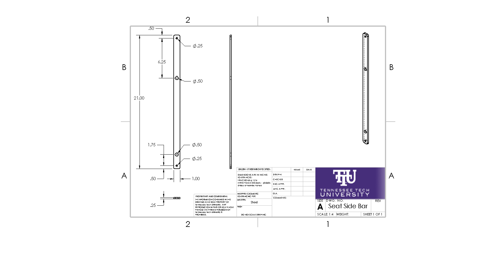
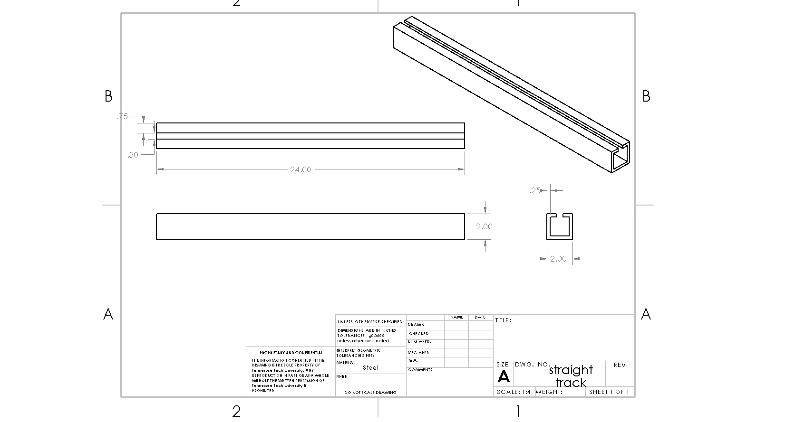

Golfing get-around
Contents |
Abstract
We are helping a little boy spend more time with his dad and enjoy more fun days at the golf course.
Team members
- team names:Melissa Grosso, Courtney Price, Noah Bryant, Nelson Chung
Acknowledge help of others
- Special thanks to Mr. Ken Lacy, who helped inspire the idea behind our chair design and graciously offered to let us borrow a golf cart.
Problem Statement/overview of the need
We are helping a little boy in a wheelchair with Spina Bifida enjoy weekends with his dad on the golf course by making it easier for the boy to remain mobile, and, in the future, making it possible for the two to golf together.
Design Specifications
The solution must be easier than carrying a child in and out of the cart- lightweight/no lifting
Must be a reliable solution- needing little maintenance and durable after exposure to the elements
Must provide maximum mobility possible for someone without the use of his legs
1. WHEELCHAIR SPECS:
- 15 in wheels
- 1.5 in tread
- tire thickness: 2.5 in
- width: 15 in
- height: 38 in w/ handle
2. GOLF CART SPECS:
- height: 69.5"
- length: 92"
- clearance: 8"
- floor clearance: 11.5"
- inner height: 55"
- seat
*height: 16" *width: 41" *depth: 18.5"
- basket
*
off the back end
- width:44"
Background research
In our extensive search for answers, we found several existing solutions to our problem; however, many of them were heavy, expensive, and cumbersome. there are ramps, modified carts, and lifts that seem viable. One of the ramps was quite intriguing, due to the fact that it could roll up and be carried anywhere, but on further inspection, it was bulky and more costly than we anticipated. We needed something less straining to set up and put away- and more cost-effective.
Another potential answer was a modified cart to hold our young friend's wheelchair. This, too, proved a challenge because let's face it, golf carts are rather pricey, and every company we came across that modified the vehicle had quotes in a range over $2,400, which would blow the budget.
The other possibility we ventured into was a lift that could elevate the wheelchair. we looked at scissor lifts and lift tables, but we found little information on one specialized for lifting a wheelchair.
One of the lifts we researched.
Conceptual Design
During our initial spitball, we tossed around several realistic and ludicrous ideas. Here are some of our most reasonable ones.
Detachable Ramp
Modified Cart
"FURY"
- Scissor Jack on tires with a hitch and brace bar. We named it Fury due to the fact that, at first, it looked much like a small armored tank.
swivel golf chair
Evaluate concepts/select candidate
Detailed Design
Detailed description of selected design
Our chosen design concept features a detachable trailer carrying a custom-made golfing aid and a modified Big Wheel car. our custom designed golfing aid consists of a chair that unfolds into a standing aid as it slides the golfer off the side of the trailer into swinging position. On the Big Wheel we decided to modify the gas and brake are rewired to a set of paddle-shifters on the steering wheel so that the car can be solely hand-operated.
Analysis
Engineering analysis 1
Engineering analysis 2
Engineering analysis 3
CAD Drawings
        

Bill of Materials
1 Northstar Sportstar I ATV/Utility Trailer Kit – $872.49
site
1 slider rail set – $103.99
site
1 Blade XR 4x4 UTV Ride On Side X Side RC w/ rubber tires –White - $499.99
site
1 Sim Racing Paddle Shifters set made from aluminum and carbon fiber - $158
site
1 Wise Outdoors White Low Back Fold Down Boat Seat – $46.71
site
1 Golf Cart Hitch, Yamaha G14-Drive ~ $70
http://justgolfcarts.com/golf-cart-hitch-yamaha-g14-drive/?gclid=EAIaIQobChMIxPr8uL-a3gIVAkwNCh2OOgU1EAYYAiABEgLv7PD_BwE
Total: $1751.18 (or thereabouts)
Assembly Instructions
Fabrication Process
Golfing Chair
{kind=link}
Power Wheels Modification
Testing and implementation
Describe testing, delivery, how used/received by the family
Photos of Completed design
Insert pictures of the final product
Instructions for safe use
Provide a clear summary of safe use for the family. Do not use the device unless supervised by an adult that has been fully understood the safe use of this product.
Project Summary, Reflection
Provide reflection on project outcomes here